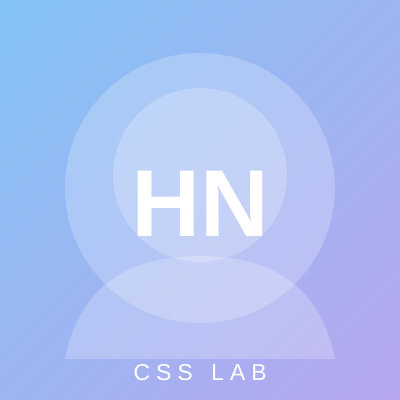

Luồng và định vị
Hiểu display, relative, absolute, z-index
19 bài thực hành từ document flow đến responsive design, animations và Bootstrap. Portfolio thể hiện kết quả học tập và kỹ năng thiết kế giao diện web.

Sinh viên thực hiện Lab 07
Chọn bài để xem kết quả trực tiếp
Hiểu display, relative, absolute, z-index
Thực hành float, clear và các lớp ảnh
Bố cục nhiều cột, media query, viewport
Transform, transition, filter, animation
Grid system và các UI component
01 / Layout: display, positioning, z-index, float/clear; bố cục 2 cột và 3 cột.
02 / Responsive: viewport, media queries và quy tắc CSS cho desktop/mobile.
03 / Hiệu ứng: transform, transition, filter, keyframes và animation.
04 / Bootstrap: hệ thống grid 12 cột, navbar, panel, button, jumbotron và list-group.
Góc nhìn sau khi hoàn thành Lab
Qua Lab 07, em củng cố cách tổ chức các phần tử trong document flow, phân biệt relative với absolute và điều khiển thứ tự chồng lớp bằng z-index. Phần em thấy hữu ích nhất là media queries và viewport vì chúng giúp website hiển thị phù hợp trên điện thoại, máy tính bảng và máy tính. Bài bố cục ba cột bằng positioning khó hơn do cần tính toán chiều rộng của từng phần. Các hiệu ứng transform, transition và animation giúp giao diện trực quan, nhưng cần tiết chế để không gây rối mắt. Em có thể áp dụng các kiến thức trên để xây dựng trang danh mục sản phẩm, sidebar bộ lọc, thẻ sản phẩm có hiệu ứng hover, banner khuyến mãi và thanh điều hướng responsive cho website thương mại điện tử.